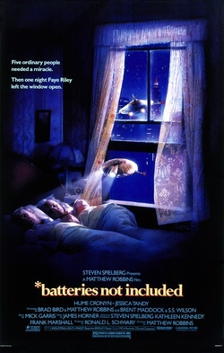

By Claus
When I think about artificial life in media, I often think about this cute old movie from the 80ies, which I saw when I was a kid. This is a very common story from that era: poor characters being threatened to be thrown out of their houses by evil corporations; with the protagonists being saved by the intervention of little robot aliens. Maybe not the best movie in the world, but it did give me motivation to think about how we could bring creatures like this to life!
Batteries not Included on IMDb